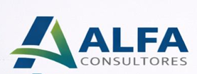

ESTRATEGIA · CALIDAD · SOSTENIBILIDAD
Implementamos ISO, OKR, ESG y gestión de riesgos para impulsar la rentabilidad, la eficiencia y el crecimiento.
NUESTRA METODOLOGÍA
Analizamos el contexto, los procesos y los riesgos.
Definimos objetivos, indicadores y planes de acción.
Aplicamos sistemas, procedimientos y herramientas.
Evaluamos resultados y verificamos indicadores.
Consolidamos el aprendizaje y la evolución organizacional.
Metodologías, normas y herramientas que transforman la estrategia en resultados medibles.
Acompañamos a organizaciones de distintos sectores mediante soluciones adaptadas a sus desafíos y objetivos.
Optimización de procesos productivos, calidad y eficiencia operativa en plantas industriales.
Gestión de calidad, trazabilidad y sostenibilidad en toda la cadena agroindustrial.
Sistemas de gestión para operaciones eléctricas, renovables y cumplimiento normativo.
Seguridad, ambiente y gestión de riesgos en operaciones upstream y downstream.
Estándares ISO, seguridad laboral y desempeño ESG en operaciones mineras.
Eficiencia operativa, calidad del servicio y optimización de cadenas de suministro.
OKR, procesos y excelencia operativa para empresas de servicios profesionales.
Modernización, gestión por resultados y cumplimiento normativo en organismos y empresas públicas.
En ALFA CONSULTORES combinamos experiencia en sistemas de gestión, planificación estratégica y finanzas para transformar la operación de las empresas en resultados tangibles.
Nuestro enfoque integra calidad, ambiente, seguridad laboral, riesgo, ESG y OKR en un modelo único que conecta la estrategia con el EBITDA.
EL EQUIPO DETRÁS DE ALFA
Detrás de cada proyecto hay experiencia, compromiso y una visión integral de la gestión.
Especialista en estrategia, sostenibilidad, sistemas de gestión y mejora continua, con experiencia en el desarrollo de modelos orientados a la calidad, la sostenibilidad y la gestión organizacional.
Perfil profesionalEspecialista en gestión de riesgos, planificación estratégica, procesos, finanzas y mejora continua, con un enfoque orientado a la generación de resultados medibles y sostenibles.
Perfil profesionalAgenda tu diagnóstico inicial sin costo
Estamos listos para ayudarte a convertir tu sistema de gestión en resultados reales.